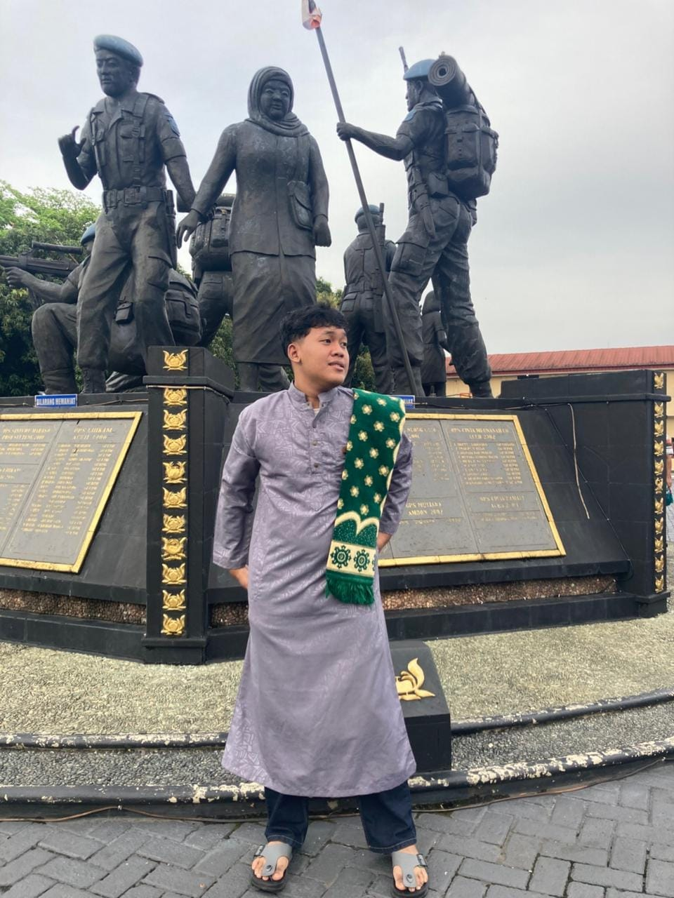

Wahyu Surya Pratama
- Alamat: Jl. Lenteng Agung Raya No. 20, Srengseng Sawah, Jagakarsa, Jakarta Selatan 12610
- Kampus: Sekolah Tinggi Teknologi Terpadu Nurul Fikri (STT-NF)
- Program Studi / NIM: Teknik Informatika / 0110226058
- Email: wahyusurya@gmail.com
- Telephone: +62 896-7013-5967
Tentang Saya
Halo! Saya Wahyu Surya Pratama, mahasiswa aktif Program Studi Teknik Informatika di Sekolah Tinggi Teknologi Terpadu Nurul Fikri (STT-NF) dengan NIM 0110226058. Saya memiliki ketertarikan mendalam dan antusiasme dalam bidang UI/UX Design. Bagi saya, merancang sebuah aplikasi bukan sekadar menyusun tampilan, melainkan seni menghadirkan pengalaman pengguna (User Experience) yang intuitif, nyaman, dan efisien, berpadu dengan antarmuka visual (User Interface) yang rapi, modern, serta mudah dipahami oleh siapa pun.
Selama perkuliahan di Teknik Informatika dan proyek praktikum, saya terus mengasah kemampuan berpikir logis, memecahkan masalah, dan bekerja sama dalam tim, termasuk mengelola alur kerja bersama menggunakan GitHub. Di luar kegiatan akademik, saya gemar bermain badminton untuk menjaga kebugaran fisik serta melatih fokus dan sportivitas. Saya berkomitmen untuk terus belajar hal baru, beradaptasi dengan perkembangan teknologi digital, dan siap berkolaborasi dalam menghasilkan karya inovatif yang bermanfaat nyata bagi masyarakat.
🎬 Video Random
Video profile dokumentasi pengguna.
📸 Koleksi Foto


Koleksi foto random pribadi